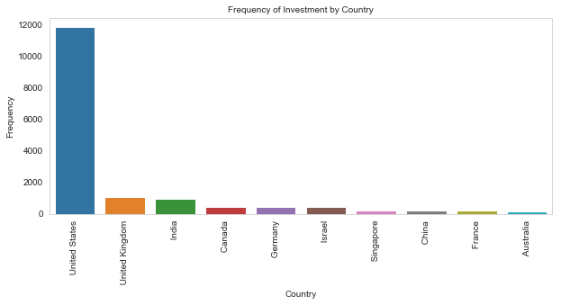
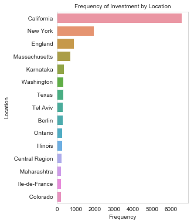
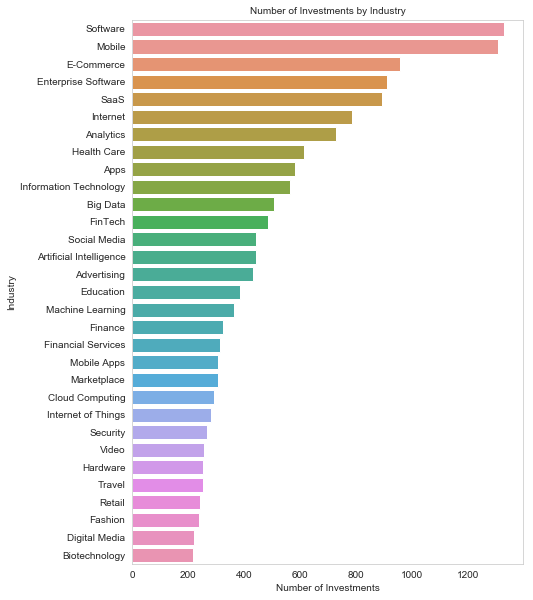
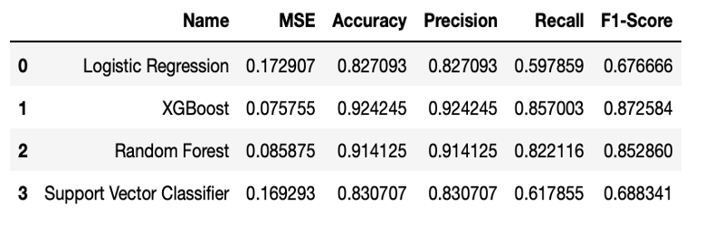
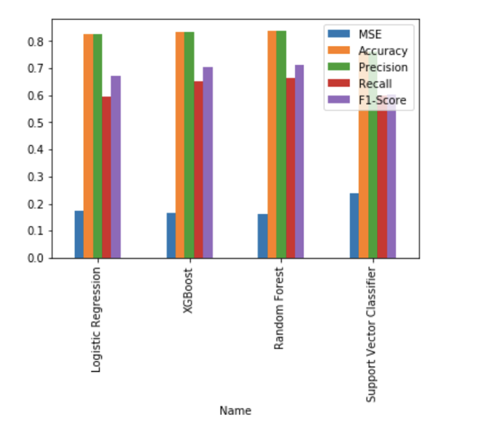

Project Objective
Through this project, I aim to help venture capitalists improve accuracy of their investments by understanding whether a start up will be successful through machine learning. A “successful” startup is defained as one that would raise series B funding at minimum.
Data
For this project, we scraped Crunchbase and LinkedIn for 40,000 founder and startup information from 1968 to 2019.
These are a few notable observations from the data:
The total investment from Series B and above take less than 40% of the total investments.

Most startup investments come from the US, specifically the states of California and New York.


Unsurprisingly, the top 5 categories that receive the most startup investments are: (1) software, (2) mobile, (3) e-commerce, (4) enterprise software and (5) SaaS.

Methods and Findings
The K-fold cross validation result is as follows:


I chose random forest and XGBoost. Random forest has decent performance metrics, and provides feature importance. XGBoost, on the other hand, has both highest accuracy (92.42%) and F1-Score (87.26%).
The feature importance provided by random forest is as follows: